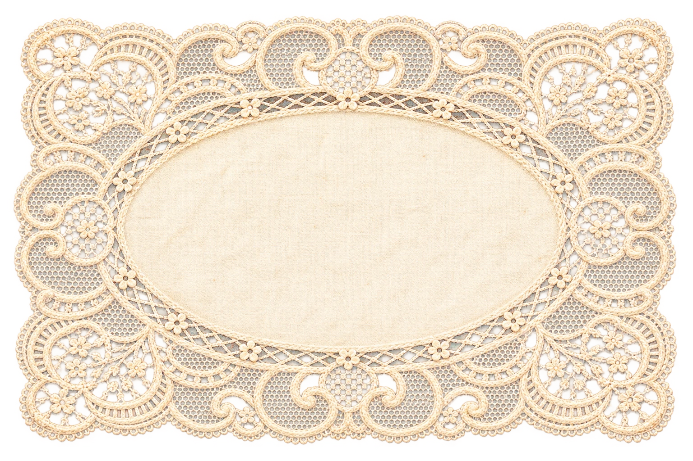
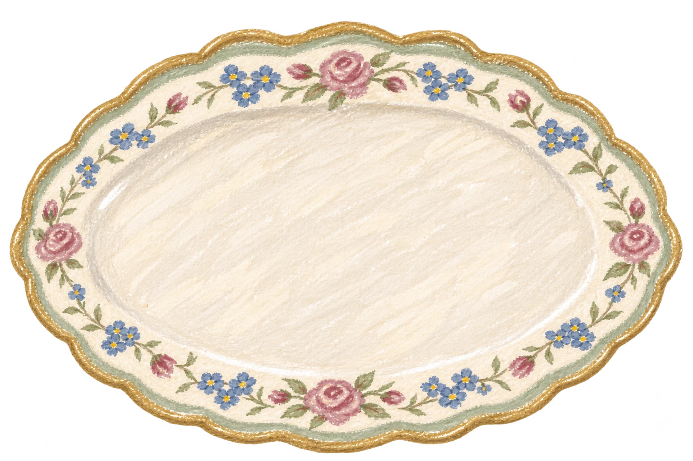
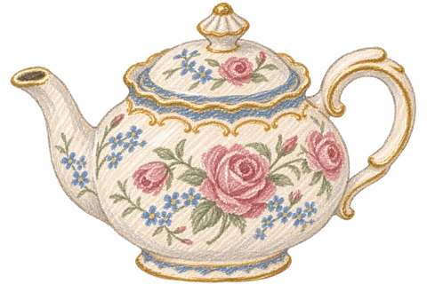

THERE'S ALWAYS TIME FOR TEA
A pause in your afternoon.
Your local time
A SMALL GUIDE TO A LOVELY TRADITION
Three tiers. One lovely afternoon.
New to afternoon tea? Start at the bottom and work your way up. Keep your favourite tea beside you.
HALF PAST FOUR · THE TEA ROOM NOTES
Your first afternoon tea
No. 01


TOP TIER · THE SWEET FINISH
Something sweet.
A slice of sponge, a little tart or a macaron. Pick a couple of favourites to finish.
MIDDLE TIER · FRESH FROM THE OVEN
A scone, of course.
Break a scone in two and add cream and jam. For a change, our middle tier also offers crumpets and Welsh cakes.
BOTTOM TIER · BEGIN WITH SAVOURIES
A few little sandwiches.
Start with delicate finger sandwiches. Try two different fillings before moving up.


And the tea? Keep a pot beside you from the first sandwich to the last sweet bite. Our pairings are starting points; your taste gets the last word.
A LITTLE ETIQUETTE, PLENTY OF ROOM FOR YOU.
Inspired by the classic sandwich, scone and cake service at Fortnum & Mason. Tea pairing notes informed by the Royal Collection. Open the illustrated guide · Save the guide as an image.

THE NEXT PART IS THE SLOW PART
We'll put the kettle on.
A name for your table, a moment for the tea. We'll let you know when your little afternoon is ready.

Prices are illustrative. No payment is taken and no booking is made.
This browser cannot remember your order. Keep this tab open and download your receipt when ready.
A MOMENT FOR THE TEA
Your tea is brewing.
Time left: 0:20good things take a little time
The page will show a ready message either way. Keep this tab open.
HALF PAST FOUR · YOUR TEA ROOM RECEIPT
An afternoon, well spent.
Total
No charge · no restaurant order submitted.
Thank you for spending a little
afternoon with us.